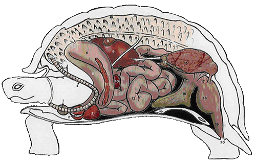
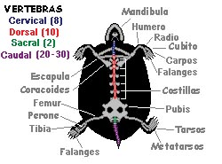
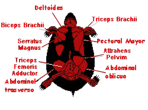
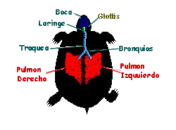
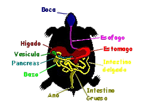
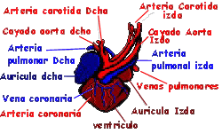
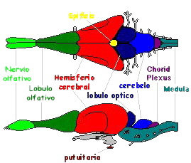

|
ANATOM�A
� Caparaz�n
� Sistema �seo
� Sistema muscular
� Sistema respiratorio
� Sistema digestivo
� Sistemas reproductor y excretor
� Sistema circulatorio
� Sistema nervioso y sensorial
DISPOSICI�N DE �RGANOS DE UNA TORTUGA

|
1.
Tiroides
2. Aur�cula
3. Ventr�culo
4. Tr�quea
5. Es�fago
6. Est�mago
7. Pulm�n |
8.
Ves�cula biliar
9.
H�gado
10. Bazo
11. P�ncreas
12. Intestino
delgado
13.
Colon
14.
Test�culo |
15. Ri��n
16. Vejiga
urinaria
17.
Coprodeum
18.
Urodeum
19.
Proctodeum
20. Abertura
cloacal |
Caparaz�n
Es una caracter�stica �nica y la mas reconocible de las
tortugas. El dise�o ha cambiado poco en casi 200 millones de
a�os.
El caparaz�n de la tortuga rodea y protege su cuerpo. Esta
formado por unos 60 huesos. Se divide en dos partes
principales: un espaldar o caparaz�n propiamente dicho, que
se sit�a dorsalmente, derivado de la uni�n, y posterior
fusi�n de las costillas y v�rtebras con elementos �seos
originados en la dermis, todo ello recubierto exteriormente
por estructuras de queratina, originadas de la epidermis,
llamadas escudos (se dice que pueden ser indicativos de la
edad del individuo, al ir aumentando su n�mero con el
crecimiento del animal; pero este no es un m�todo preciso en
la mayor�a de las especies, al estar sujeto a los posibles
cambios metab�licos que pueda sufrir el animal; sin embargo,
los escudos sirven para identificar diferentes especies
similares entre s�); y un peto o plastr�n, situado
ventralmente, formado a partir de la fusi�n de los huesos de
la cintura escapular (la clav�cula y la interclav�cula) y
los gastralia. El plastr�n se une al caparaz�n mediante
sendos puentes �seos laterales.
El plastr�n
(izda) y el espaldar (dcha) de una tortuga de caja. El �rea
entre los escudos pectorales y abdominales del plastr�n es
la bisagra.
El espaldar de la mayor�a de las tortugas tiene cerca de 50
huesos, y en la mayor�a de las tortugas, los huesos est�n
cubiertos por 26 escudos. El plastr�n de la mayor�a de las
tortugas tiene 11 huesos y 12 escudos.
Existen multitud de modificaciones evolutivas en el caparaz�n
de las tortugas. La funci�n protectora de un gran caparaz�n
que act�e como dura fortaleza, est� representada en su forma
m�s pura en las tortugas terrestres gigantes (Testudinidos),
donde su peso se ha reducido merced a un adelgazamiento de
sus huesos, siendo los escudos los verdaderos art�fices de
la dureza.
Otras tortugas han reducido a la m�nima expresi�n los huesos
del caparaz�n tal como los conocemos. En su lugar presentan
una correosa piel (la tortuga la�d, cuyo caparaz�n no
presenta escudos �seos, sino que est� formado por peque�as
plaquitas �seas incrustadas en la piel, la cual presenta una
textura oleosa).
Otra adaptaci�n evolutiva es la presencia de una bisagra o
charnela, utilizada como herramienta de protecci�n o para
evitar la deshidrataci�n del animal, y que, seg�n el g�nero,
est� presente en la regi�n craneal (Sternotherus), en la
regi�n caudal (Kinixys) o en ambas regiones (Kinosternon)
del plastr�n; tambi�n existen tortugas que presentan la
bisagra en el espaldar, las tortugas articuladas africanas.
Algunas tortugas no han llegado tan lejos, presentando, a lo
sumo, cierto grado de flexibilidad, no pudiendo cerrar sus
caparazones, presentando uniones ligamentosas entre el
espaldar y el peto, que les facilita la puesta de sus
fr�giles huevos (Cyclemys, Notochelys).
El caparaz�n de la tortuga, tiene una notable capacidad de
regeneraci�n, si una parte es da�ada por depredadores,
fuego, u otra causa, las �reas sanas continuar�n creciendo y
el da�o se cura.Al crecer una tortuga, una nueva capa de
queratina se a�ade por debajo de la existente. En ciertas
especies, las nuevas capas forman anillos prominentes de
crecimiento. El n�mero de anillos de crecimiento no nos dice
la edad de la tortuga. Si las condiciones son favorables, se
pueden formar varios anillos en una estaci�n.
La piel esta tambi�n recubierta de escamas.
Sistema
�seo
El hueso es tejido fino conectivo mineralizado. Dentro de la
mayor�a de los huesos hay un �rea esponjosa suave conocida
como tu�tano. Las c�lulas rojas y blancas de la sangre se
producen en el tu�tano de algunos huesos (f�mur).
Hay dos partes en el esqueleto de la tortuga, el exoesqueleto
(caparaz�n y plastr�n) y el endoesqueleto (huesos internos).
El endoesqueleto lo consideramos dividido dos partes, el
esqueleto axial (cr�neo, v�rtebras y costillas) y el
esqueleto apendicular (los huesos y las fajas de los
miembros). Las tortugas son �nicas porque sus fajas pectoral
y p�lvicas est�n dentro de su jaula de costillas. Esta
transformaci�n ocurre durante el desarrollo embrionario. Las
tortugas tienen generalmente entre 40 y 50 v�rtebras. Las
costillas de la tortuga se convierten en las placas costales
del caparaz�n. Las costillas se unen con las placas de la
concha. Las patas de la tortuga se proyectan hacia los lados
del cuerpo debido al plastr�n.
Las tortugas no tienen dientes, en su lugar tienen un pico
c�rneo.

Principales estructuras:
� Cr�neo y mand�bula: Son los huesos de la cabeza, realmente
esta constituido por vario huesos unidos, el cr�neo protege
el cerebro.
� V�rtebras Cervicales: Huesos del cuello. Las tortugas tienen
ocho. La mayor�a de ellas, pueden retraerlos bajo el
caparaz�n para proteger mejor el cuello.
� V�rtebras dorsales: Hay diez v�rtebras dorsales. Est�n
unidas a las placas del caparaz�n. Una costilla sale
tor�cica de cada v�rtebra dorsal.
� H�mero: El hueso superior de la pata delantera.
� Radio y c�bito: Huesos de la pata delantera. El cubito es el
m�s grande de los dos.
� Carpos: Los huesos de la mu�eca.
� Falanges: Los huesos del dedo del pie. El extremo de los
huesos forma garras c�rneas.
� Om�plato: El hueso m�s largo recto de la faja pectoral.
� Coracoides: Otro hueso de la faja pectoral.
� F�mur: El hueso del muslo. Produce la mayor�a de las c�lulas
rojas y blancas de la sangre.
� Peron� y tibia: Huesos de la pata. La tibia es m�s grande y
gruesa.
� Tarsos : Huesos del tobillo.
� Metatarsos: Huesos de los pies.
Sistema Muscular
El sistema muscular de una tortuga no muy diferente del de
otros vertebrados. Los m�sculos est�n formados por c�lulas
largas que son capaces de contracci�n. Hay 3 tipos de tejido
muscular: m�sculo esquel�tico, cardiaco y liso.
Los m�sculos esquel�ticos est�n unidos a los huesos por los
tendones. Pueden ser contra�dos muy r�pidamente y son
responsables de la mayor�a del movimiento voluntario.
El m�sculo cardiaco forma la pared del coraz�n.
El m�sculo liso se encuentra en las paredes de la zona
digestiva, arterias, vejiga, y otros �rganos. Los m�sculos
lisos son controlados por los nervios del seperate del
m�sculo esquel�tico y son involuntarios. La tortuga no puede
controlar voluntariamente sus acciones y no est�
generalmente enterada de su movimiento.

Las principales estructuras son:
� Deltoideo: M�sculo del hombro. Movimiento delantero del
brazo.
� B�ceps: M�sculo del brazo superior. Unido en un extremo al
coracoides y en el otro el radio y cubito. Dobla el
antebrazo.
� Tr�ceps: M�sculo del brazo superior. Contrapartes del
b�ceps. Ampl�a y rota el brazo.
� Serratus Magnus: Unido al caparaz�n y el coracoides. Ampl�a
y mueve el brazo al rev�s.
� Pectoral mayor: M�sculo del pecho. Tira del brazo hacia
abajo.
� Pelvim de Attrahens Se une al plastr�n y la faja p�lvica.
Sostiene la faja p�lvica en su lugar.
� Aductor femoris: Extiende el muslo.
� Tr�ceps Abdominl oblicuo y transversal: Unido al plastr�n.
Puede estar implicado en la respiraci�n.
Sistema Respiratorio
El ox�geno es necesario para el metabolismo, durante el cual
se produce el bi�xido de carbono. El trabajo del sistema
respiratorio es coger ox�geno y eliminar el bi�xido de
carbono. Las tortugas tienen pulmones y deben respirar
ox�geno del aire. Incluso las tortugas del mar, que son los
reptiles m�s acu�ticos, deben emerger cada cierto tiempo.
Las tortugas marinas tambi�n inflan sus pulmones para
mantenerse a flote y tomar el sol.
Algunas tortugas, pueden intercambiar los gases por �reas de
su piel, cloaca y garganta. La cantidad de ox�geno obtenida
es baja, pero es la suficiente para mantenerlas con vida
durante �pocas de baja necesidad de ox�geno (hibernaci�n).
La inspiraci�n/expiraci�n se realiza a trav�s de las fosas
nasales, no siendo fisiol�gica la respiraci�n a trav�s de la
boca. El aire inspirado penetra en la tr�quea a trav�s de la
glotis, la cual se encuentra a nivel caudal de la base de la
lengua. La mayor�a de las tortugas presentan un corto tubo
traqueal, en comparaci�n con otros reptiles, debido a que la
tr�quea se bifurca muy pronto, a nivel de los territorios
craneales del cuello, en dos bronquios principales. Esto
permite respirar al animal cuando presenta la cabeza
escondida teniendo el cuello replegado.
Los pulmones presentan su cara dorsal adosada a la superficie
ventral del caparaz�n, mientras que la cara ventral limita
con una l�mina fibromuscular que separa los pulmones del
paquete digestivo. Esta l�mina presenta ligamentos que la
fijan al h�gado, est�mago e intestino, pero no es un
diafragma.
En comparaci�n con los mam�feros, y aunque el volumen pulmonar
es grande, la superficie respiratoria es menor, por ser
animales con un bajo ritmo metab�lico.
En los procesos respiratorios intervienen varios grupos
musculares, ayudados por movimientos de las extremidades y
de la cabeza. Sin embargo, no presentan una presi�n negativa
intrator�cica, lo cual posibilita que la respiraci�n no se
vea afectada ante graves traumatismos del caparaz�n que
expongan los pulmones al exterior.
Dos cosas a tener en cuenta son: La extraordinaria capacidad
de las tortugas para mantener largos per�odos de apnea. Y
que la estructura de su aparato respiratorio favorece la
permanencia y el estancamiento de secreciones y cuerpos
extra�os dentro de los pulmones, por ello los problemas
neum�nicos sean frecuentes y con consecuencias fatales.

Principales estructuras:
� Boca y faringe: Cavidades dentro del cr�neo por donde entra
el alimento, y el aire.
� Glotis: Conecta la faringe y la laringe. Se cierra cuando la
tortuga se sumerge o al comer.
� Laringe: El extremo superior del conducto respiratorio. Est�
conectado con la glotis y conduce a la tr�quea.
� Tr�quea y bronquios: La tr�quea es un tubo hueco largo entre
los pulmones y la laringe, se divide en dos bronquios. Un
bronquio entra en el pulm�n izquierdo, el otro en el
derecho.
� Pulmones: �rganos grandes, rojizos, esponjosos que est�n
debajo del caparaz�n. El aire pasa del bronquio a tubos m�s
peque�os en los pulmones llamados bronquiolos. Los
bronquiolos son progresivamente m�s peque�os hasta que
terminan en un racimo peque�o de sacos de aire, llamados
alv�olos, y en ellos es donde se intercambian los gases. El
Ox�geno del aire pasa a la sangre, mientras que el bi�xido
de carbono pasa de la sangre al aire.
Sistema Digestivo
El aparato digestivo de las tortugas comienza en la boca, la
cual no presenta dientes sino un duro pico corneo con el
cual despedazan las piezas. La degluci�n se lleva a cabo
gracias al mucus producido por las gl�ndulas salivares y a
la larga y ancha lengua.
Ciertas tortugas han desarrollado estructuras bucales que
utilizan en provecho de su alimentaci�n, bien sea en sus
t�cnicas de caza, como la tortuga aligator (familia
Chelydridae), que posee un peque�o ap�ndice vermiforme sobre
la lengua con capacidad de distensi�n al llenarse de sangre
y de moverse por medio de determinados m�sculos, el cual
utiliza como se�uelo de pesca. O bien sea para obtener
alimentos, como algunas especies comedoras de moluscos
(familia Em�didos, g�neros Graptemys y Malayemys). O
comedoras de frutos (familia Em�didos, g�nero Pseudemys,
Cachuga y Batagur) que presentan un paladar secundario con
capacidad para romper las conchas o partir los frutos.
El bolo alimenticio pasa al es�fago y, posteriormente, al
est�mago por medio de la v�lvula gastroesof�gica. El
est�mago est� situado en el lado izquierdo de la cavidad
cel�mica.
El intestino delgado es de escasa longitud, realiz�ndose la
absorci�n de los nutrientes y del agua, merced a sus enzimas
digestivas y a las secretadas por el p�ncreas y la ves�cula
biliar. Mediante la v�lvula ileocecal se conectan el
intestino delgado y el intestino grueso. �ste �ltimo
presenta un ciego de escaso desarrollo y un c�lon con sus
tres porciones (ascendente, transverso y descendente), que
desemboca en el recto, y �ste en la cloaca (a nivel del
coprodeum, donde se retienen las heces antes de su
expulsi�n).
El p�ncreas es un �rgano de color rosa-anaranjado p�lido,
situado junto al bazo o alojado entre los mesenterios del
duodeno. A trav�s de un corto conducto, drena el jugo
pancre�tico al duodeno. Presenta funciones endocrinas y
exocrinas. El p�ncreas puede estar asociado al bazo formando
el esplenop�ncreas.
El h�gado es un �rgano voluminoso, que puede estar totalmente
pigmentado de melanina. Est� situado ventralmente, ocupando
completamente de un lado a otro la cavidad cel�mica. Entre
los dos l�bulos mayores se encuentra la ves�cula biliar.
Para su fijaci�n en la cavidad cel�mica presenta puntos de
sujeci�n con el coraz�n y el est�mago.

Las principales estructuras son:
� Boca: Cavidad dentro del cr�neo. El alimento, el agua, y el
aire entran en el cuerpo a trav�s de la boca.
� Es�fago: Tubo largo, estrecho que conecta la boca con el
est�mago.
� Est�mago �rgano digestivo tubular. El est�mago es mucho mas
ancho que el es�fago o los intestinos. Las enzimas y los
�cidos de gl�ndulas en la pared del est�mago descomponen el
alimento. Las enzimas son ayudadas por el movimiento de los
m�sculos del est�mago que baten el alimento alrededor.
� H�gado: El �rgano m�s grande del cuerpo de la tortuga. Es un
�rgano marr�n rojizo grande. Entre otras las cosas, el
h�gado produce la bilis.
� Ves�cula biliar: �rgano verdoso peque�o situado detr�s del
h�gado. Mantiene y vierte la bilis del h�gado en el
intestino peque�o.
� P�ncreas: gl�ndula delgada y p�lida, situada al lado del
intestino peque�o. Produce las enzimas que lanza en el
intestino peque�o v�a conducto pancre�tico.
� Intestino delgado: Tubo largo, en espiral que en un extremo
se une al est�mago y en el otro al intestino grande. Los
nutrientes del alimento son absorbidos en el cuerpo por las
vellosidades intestinales.
� Intestino Grueso Conectado con el intestino delgado. La
funci�n principal de este �rgano es reabsorber el agua de
los residuos del sistema digestivo. En el pueden vivir
grande gran cantidad de bacterias. Estas bacterias pueden
incluir E. coli y salmonela. que no son da�inas para la
tortuga, pero pueden causar enfermedades en los seres
humanos.
� Ano Extremo de la zona digestiva, por donde se expulsan las
heces.
Sistemas reproductor y excretor
El aparato urinario est� compuesto por dos ri�ones situados en
la regi�n ventrocaudal del caparaz�n. De los ri�ones parten
sendos ur�teres que desembocan en la vejiga urinaria, a
nivel del cuello de �sta. La vejiga es bilobulada y presenta
una pared con gran capacidad de distensi�n. En los procesos
de micci�n, la orina (�cido �rico y sales de uratos) llega a
la cloaca a trav�s del urodeum.
El aparato genital presenta las g�nadas (test�culos u ovarios)
localizados cranealmente a los ri�ones. Los machos presentan
un pene extensible de gran desarrollo, liso y de coloraci�n
oscura, que no presenta funci�n de micci�n. Para la
eyaculaci�n, el pene presenta un surco seminal por donde
sale el semen. Cuando no est� erecto, yace ventromedialmente
en el proctodeum, sobre el suelo de la cavidad cel�mica. Las
hembras, presentan unos largos oviductos donde tiene lugar
la formaci�n de las envolturas del huevo.
La fertilizaci�n es interna para todas las tortugas. Durante
el acoplamiento, el esperma se pasa del macho a la hembra.
La fertilizaci�n del huevo se realiza en los oviductos de la
hembra. En algunas especies, la hembra puede almacenarlo por
varios a�os. Todas ponen los huevos en tierra, y algunas
retornan al punto de nacimiento todos los a�os.
Las tortugas marinas recorren largas distancias para regresar
a las playas donde nacieron. Algunas hembras de tortugas
marinas pueden poner hasta 400 huevos en varias puestas en
una temporada. Los huevos de tortuga pueden ser cori�ceos o
de c�scara dura. Despu�s de poner los huevos, la hembra de
tortuga los cubre con tierra o arena y los abandona. La
hembra no ve el nacimiento y no se toma ning�n inter�s en
cuidarlos. El calor del sol, que calienta la tierra, incuba
los huevos.
Las principales estructuras son:
� Ri�ones: �rganos compactos, aplanados situados bajo
caparaz�n. Los ri�ones son responsables de filtrar la sangre
y de eliminar los residuos t�xicos. Estos residuos se
concentran y se env�an a la vejiga como orina.
� Vejiga: �rgano que almacena orina.
� Cloaca: �rgano cil�ndrico que se abre al exterior del cuerpo
de la tortuga. Recibe los residuos del intestino y de la
vejiga, y el esperma del macho o los huevos de la hembra.
� Test�culos (macho): Produce el esperma. Localizados a los
lados de la vejiga.
� Pene (macho): Mediante �l se introduce el esperma en la
hembra durante la c�pula.
� Ovarios (Hembra): �rganos reproductores femeninos.
� Oviducto (Hembra): Tubos que conectan los ovarios con la
cloaca. Los huevos que produjeron en los ovarios pasan a los
oviductos. Despu�s de la copula, el esperma masculino llega
a los oviductos y fertiliza el huevo. El huevo entonces
contin�a su camino bajando por el oviducto hasta la cloaca.
� Vejiga Urinaria Accesoria: En las hembras, estos �rganos
sirven para retener agua, que se utiliza para ablandar la
tierra al cavar un nido.
Sistema Circulatorio
El coraz�n de las tortugas, al igual que los saurios y los
ofidios, esta formado por dos aur�culas y un ventr�culo.
La aur�cula derecha recibe la sangre desoxigenada que proviene
del seno venoso, al cual ha llegado procedente de la
circulaci�n sist�mica. El seno venoso es una c�mara situada
sobre la superficie dorsocaudal de la aur�cula derecha, que
presenta una pared muscular a trav�s de la cual llega la
sangre drenada por las venas precavas derecha e izquierda,
la vena postcava y la vena hep�tica izquierda.
La aur�cula izquierda recibe sangre desde los pulmones
oxigenada a trav�s de las venas pulmonares izquierda y
derecha.
Al tener un solo ventr�culo, �ste debe realizar una doble
funci�n, esto es, desde el punto de vista anat�mico existe
un �nico �rgano que fisiol�gicamente trabaja como si fueran
dos. Para ello, presenta tres compartimentos o subc�maras:
Cavum pulmonale, cavum venosum y cavum arteriosum. El cavum
venosum y el cavum arteriosum est�n conectados mediante un
canal interventricular y reciben sangre procedente de los
atrios derecho e izquierdo respectivamente. El cavum
pulmonale est� separado de sus hom�nimos mediante un pliegue
muscular. El cavum venosum presenta una localizaci�n
cr�neo-ventral dentro del ventr�culo extendi�ndose hasta los
dos arcos a�rticos, uno izquierdo y otro derecho, que salen
exoventramente desde el ventr�culo. A nivel craneal del
canal interventricular se disponen dos v�lvulas
auriculoventriculares, las cuales ocluyen de forma parcial a
dicho canal durante la s�stole auricular; mientras que,
durante la s�stole ventricular, evitan que la sangre refluya
desde el ventr�culo hacia el atrio. La localizaci�n de las
v�lvulas auriculoventriculares en el canal interventricular,
unido a las contracciones musculares que originan cambios de
presi�n en el �rgano, hace posible que con un solo
ventr�culo, las tortugas presenten un completo circuito para
que la sangre fluya entre los diferentes �rganos encargados
de su depuraci�n sin mezclarse. As� la sangre de la aur�cula
derecha es enviada mediante la s�stole auricular hacia el
ventr�culo, exactamente al cavum venosum y pulmonale para
luego ir a los pulmones.

Resumiendo,
el ox�geno y los alimentos necesarios para el metabolismo
son transportados a las c�lulas por la sangre, que viaja a
trav�s del cuerpo por el sistema
circulatorio. El sistema circulatorio consiste en el coraz�n,
las arterias, las venas y los tubos capilares. Las tortugas
tienen un coraz�n con tres c�maras, aur�cula izquierda,
aur�cula derecha, y ventr�culo. El ventr�culo esta separado
parcialmente en dos secciones por un tabique incompleto.
Esto reduce la mezcla de sangre venosa y arterial. La sangre
venosa (desoxigenada) procedente del cuerpo entra en la
aur�cula derecha. que se contrae y empuja la sangre al
ventr�culo. Desde all� va a los pulmones donde el bi�xido de
carbono se intercambia por oxigeno. La sangre oxigenada
retorna a la aur�cula izquierda del coraz�n. De ella pasa al
ventr�culo y de all� se distribuye al cuerpo por las
arterias y retorna por las venas al coraz�n.
Sistemas nerviosos y sensorial

El sistema
nervioso (cerebro, m�dula espinal y nervios) esta compuesto
por las c�lulas llamadas neuronas. Las neuronas son las
c�lulas largas y especializadas que pueden transmitir
se�ales. Los nervios llevan impulsos de los �rganos
sensoriales al cerebro donde se procesan. El cerebro es el
centro del sistema nervioso. El cerebro de la tortuga es
mucho m�s avanzado que el de los anfibios. Sin embargo, es
muy primitivo cuando se compara con el de mam�feros o
p�jaros.
Del cerebro sale la m�dula espinal. La m�dula espinal,
protegida por la espina dorsal y el caparazon, va hasta la
parte posterior de la tortuga. La m�dula espinal lleva la
informaci�n a/y desde el cerebro. Los reptiles tienen doce
nervios. Todas las tortugas responden a las vibraciones,
pero no pueden o�r bien. Las tortugas tienen buena vista.
Una membrana transparente cubre cada ojo, protegiendolo
contra la suciedad, arena, y otros objetos. El sentido del
olfato esta muy desarrollado. Las tortugas pueden oler
fuentes del alimento a grandes distancias. El sentido del
gusto de la tortuga va unido al olfato. El caparazon y la
piel de la tortuga son sensibles al tacto.
Partes del cerebro de la tortuga:
� Nervio olfativo: Nervios que conectan la nariz con el l�bulo
olfativo.
� L�bulo olfativo La parte del cerebro que controla el proceso
de oler. Localizado en el frente del cerebro.
� Hemisferio Cerebral: Area grande que controla los
movimientos, los sentidos, y comportamiento.
� L�bulos �pticos: Centros importantes en el proceso de la
informaci�n de los ojos.
� Cerebelo: Funciones para coordinar los movimientos.
� M�dula: Controla funciones auton�micas, tales como
respiraci�n, actividad del coraz�n, tragando y digesti�n.
� Cuerpo Pituitario: (tambi�n llamado la gl�ndula pituitaria)
Gl�ndula situada en la base del cerebro. Produce y almacena
las hormonas que regulan las actividades del cuerpo de la
tortuga.
|